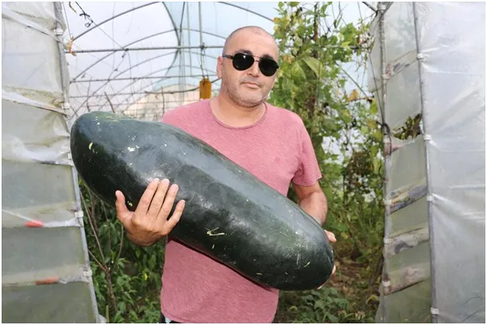
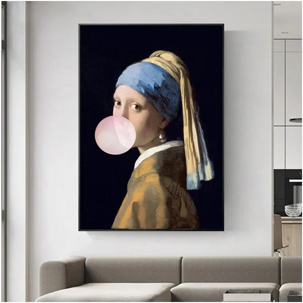

Sezon ogórkowo-atomowy
Sezon ogórkowy tuż, tuż. Politycy znikają na urlopach, robi się nudno w TV. Coraz mniej głupawych wypowiedzi, coraz mniej awantur w tzw. „programach publicystycznych”. Mamy rok wyborczy oraz wszyscy jesteśmy „zaszczepieni” ogromną dawką idiotyzmu po 2020 roku, więc zdewaluowana głupota potrzebuje kilku kolejnych zer na skali.

Idealne są tematy obyczajowe. Gdy uczyłem się czytać w prasie były tylko krótkie notki w kronice policyjnej: „Genowefa S. będąc pod wpływem alkoholu, ugodziła swego konkubenta nożem, w następstwie czego doszło do zgonu z powodu wykrwawienia” . Od tego czasu dziennikarstwo bardzo się rozwinęło . Najdokładniej są opisywane te zbrodnie, w których nie ma ofiary. Wtedy przez wiele lat media latem wracają do sprawy i pokazują twarz zaginionej osoby, a obok jakieś niezidentyfikowane zwłoki w rowie z wodą, a nad tym pytanie: „ Czy to Madzia?”. Przypominam, że w Polsce dziennie umiera ponad 1200 osób, wiele na powikłania po wirusach, a 1,4 to ofiary morderstw. Tygodniowo wychodzi 10, tymczasem media jak polubią jeden przypadek to wałkują latami.
Bardzo dobrze „idą” morderstwa w egzotycznych hotelach, wtedy Polacy dyskutują, czy to moralnie wpuszczać kilku obcych do hotelowego pokoju, czy nie. Oczywiście trzeba wtedy dodać wątek, że właśnie na takie okazje potrzebna jest aborcja na życzenie. Sami widzicie, aborcja zabroniona i kobieta zmarła jeszcze przed poczęciem dziecka, to przez ten ciemnogród.

Nie zaglądam do mainstreamu i nie wiem, czy często „chodzi” latem jakiś znany, lewicujący ksiądz na plaży w slipkach, jeśli nie było jeszcze proszę dopisać, że to mój pomysł. Koniecznie musi być z gwiazdą z TV w kusym stroju.
Wieloryby w Wiśle, potwory z Loch Ness w Bałtyku, to już dawno przerabialiśmy, chińskie balony jako „obcy” też. W tym sezonie stawiam na zagrożenie nuklearne. Skoro wszyscy mieliśmy umrzeć od normalnego wirusa a żyjemy to z atomówką nie ma żartów. A wiadomo, że te rakiety z głowicami nuklearnymi obsługują pijani szeregowcy o zszarpanych nerwach. Wrzuci taki niedopałek pod rakietę i już po Londynie, wtedy tamci odpowiedzą „adekwatnie” i mamy koniec świata. Po takich wakacjach cieszymy się, że nasz dom stoi, gdy wracamy i 30% podwyżka opłat to uśmiech losu, mogło być 50% ale premier i prezydent zrobili, co mogli. Opalili się przy tym bardzo, bo wiadomo gaz z Kataru a węgiel z Australii na własnych plecach przynieśli.
Paweł Klimczewski
W wakacyjnych planach polecam dwa teksty:
https://pawelklimczewski.pl/2023/04/01/slonce-przysypia-gdzie-na-wakacje/
https://pawelklimczewski.pl/2023/06/04/wakacje-to-duze-wyzwanie/